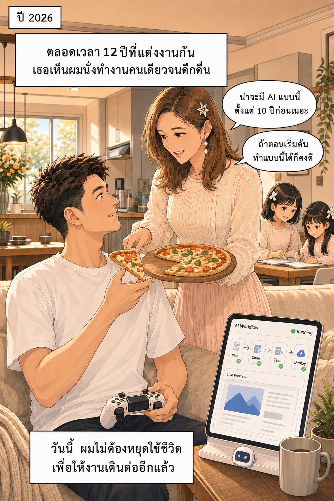
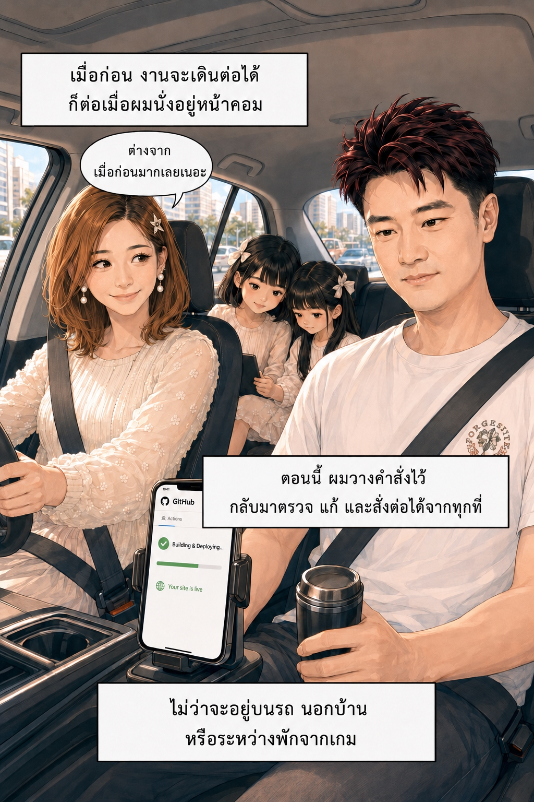
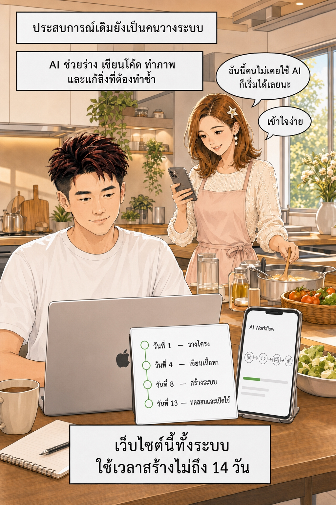

จากวันที่งานเดินต่อได้เฉพาะหน้าคอม สู่วันที่โทรศัพท์เครื่องเดียวช่วยให้งานเดินไปพร้อมกับชีวิต



สิ่งที่เคยใช้เวลาหลายปี วันนี้เริ่มได้จากโทรศัพท์เครื่องเดียว
ดูแผนที่สั้น ๆ ก่อน แล้วค่อยเริ่มสร้าง Item ชิ้นแรกของคุณ
 กดภาพเพื่อเปิด Walkthrough →
กดภาพเพื่อเปิด Walkthrough →
BLACKSMITH
ใช้รหัสนี้ในหน้าทำการ์ด เพื่อรับตรา ⚒️ ช่างตีเหล็ก และกรอบไฟบนการ์ดของคุณ
ไปทำการ์ดของคุณ →